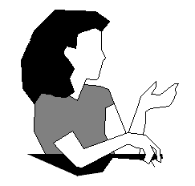
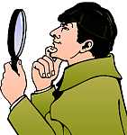
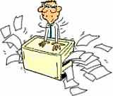

| Ethics Dictionary | Conditions Formulas | PTS Glossary | FAQs |
|
|
| Ethics Dictionary | Conditions Formulas | PTS Glossary | FAQs | |
Note: This chapter is from 'The Road to Clear", Level 4 Pro.
PTS Phenomena
 |
 |
 |
 |
In the previous chapter we took a good look at the anti-social personality and the social personality. This is basically "good and evil" as we know it. Pro-survival and Counter-survival if you will. Now, nothing in this world is well understood if we only understand the extremes. Extremes are of course a good starting point but the truth is, that all in this world is only fully understood if we can see the different grades of things between the extremes. That is what the scales in ST are all about. There are grades of affinity, grades of reality and grades of communication. There are grades of awareness and grades of cause and effect. "Absolutes are unobtainable in this universe" according to R. Hubbard. In the same way, there are no absolute good and absolute evil.
 |
|
When we deal with PTS phenomena and suppressive persons we are dealing with beingness, and we have to use the same principle of "absolutes are unobtainable". But let us for a moment try to look for absolute suppressive. It may be the easiest to get an idea of absolute suppressives in certain totalitarian regimes. Usually a suppressive person, such as a Josef Stalin, Adolph Hitler, Saddam Hussein or whoever, have schemed and murdered their way to the top. Now they are in complete control and should have little to fear. Yet they do. They are apparently living in a constant state of terror. Obviously this isn't completely unfounded. Attempts are made on their lives and only the tightest of security guarantees their continued survival. It has become a self-fulfilling prophecy. The dog-eat-dog world they envisioned while rising to power is real and they are the principal character in that world - just as we may assume they thought all along.
When we look at more free societies, as we know them in the West, things are apparently a lot different. Such a person is not at liberty just to murder opponents or rivals or perceived enemies. The whole game of these emotions, fears and hates doesn't go away, however, but become covered up and regulated by society's demands, rules and laws. But unfortunately, the passions may still run strong under the surface.
But even the most absolute suppressive person we can think of will be terrified in some areas and more at ease in others. If you take serial killers of women you know what I am talking about. They are possessed of an evil purpose to do away with all women (or maybe all women with a certain appearance). They may be more at ease in other areas of their lives and able to appear to be normal at first look. You have religious fanatics ready to kill anyone of other faiths, but be quite social when it comes to their own group. You have the mafia characters, such as "Godfather". He was a notorious killer and parasite, but also a great family man.
Crime investigators and so-called profilers, who are trying to predict criminal behavior and characteristics, may have a lot to say about all these things. Historians of different suppressive groups and individuals may have something to say about this as well.
But when we talk about a near absolute suppressive we have an individual motivated by terror and fear and using evil to protect his own survival in many twisted ways. His solution is to damage or ideally kill anybody posing a threat. In society this is usually seen to be done covertly, using the rules and laws in suppressive ways, using 'oversights' and 'mistakes' and using 'everybody knows', using 'duty', using patriotic or religious ideals to fight their wars with, etc., etc.
"Remember that the real
suppressive person (SP) was the one that wove a dangerous environment around the
pc. To find that person is to open up the pc's present time perception or space.
It's like pulling a wrapping of wool off the pc.
The SP persuaded or caused the pc to believe the environment was dangerous and
that it was always dangerous and so made the pc pull in and occupy less
space and reach less.
When the SP is really located and indicated the pc feels this impulse to
withdraw, his impulse not to reach out, will diminish; his space opens up.
The difference between a safe environment and a dangerous environment
is only, that a person is willing to reach and expand in a safe environment and
reaches less and contracts in a dangerous environment.
An SP wants the other person to reach less. Sometimes this is done by forcing
the person to reach into danger and get hurt so that the person will thereafter
'know' to reach less.
The SP wants smaller, less powerful beings. The SP thinks that if another became
powerful this person would attack the SP.
The SP is totally insecure and is battling constantly in covert ways to make
others less powerful and less able.
 |
Bottom Line: It is no easy matter |
A full insight and reliable test is really beyond ST. The subject is more prone to lead to witch hunts and wars than auditing. But you have to realize there are certain groups and individuals you simply should leave alone and actively keep away from. Furthermore, you may have to protect yourself against them as does society against criminals. They are just not out to play your game whatsoever. If you try to help or reform such individuals you are in a war as they are dead against what you are doing. They don't want to receive help or to reform anything about themselves. Sometimes they may pretend so just to come close enough to cause damage.
Our interest in this are the PTS individuals. Here we can do something. They are under the influence of such suppressive persons and groups. They may at times display the characteristics of these. They may use their arguments, display their emotions and dramatize their way of 'solving' problems occasionally. But this is not as a deep felt conviction they are living by, but is a result of the influence the SP individuals and groups have on them. Routinely the PTS person is the visible and noisy one. The SP behind this is invisible but hard at work.
 |
'Can't have-Enforced have' is |
Can't Have- Enforced Have
SPs are SPs because they deny Havingness
and enforce unwanted Havingness. They also deny doingness and enforce unwanted
doingness. They deny beingness and enforce unwanted beingness as well.
"Can't have" means: The denial of something to someone else.
"Enforced have" means: Make someone accept what they didn't want.
Doing this is one of the tools of suppression and antagonizing. This is of course also part of any game with two opposing sides. You try to deny the enemy things he wants; and you try to enforce things upon him he doesn't want. In war you would try to deny your enemy of supplies and military help. You would force bullets, hardships, losses and death upon him. When we talk about more subtle means of antagonizing and suppressing this is still at work. It may be right down to the AT denying you the small pleasures in life and force you to accept meaningless things that are disgusting to you. They deny Havingness and enforce unwanted Havingness. The AT will try to do the same with Beingness and Doingness.
Examples: Some parents do this all the time and wonder why their child is misbehaving. You can't see people you want to see. You have to accept the company of disgusting people. "You have to do as I say - no time to play around" (doingness); and you can't have even the simple pleasures of life, "because girls don't like that". Forcing a child into a profession he doesn't want would be an example of enforced beingness.
Who Can the Auditor Help?
 |
Basically
you can help any person, |
From a practical point of view, here is what we are interested in and what we can do something about with ST. With standard clearing technology you can help people, who are sincerely interested in self betterment. They have to be there on their own free will and have a personal hope and engagement in what you want them to do. To try to handle somebody, who is not there on their own determinism is not something you should get yourself into. People may walk through your front door for auditing. If they are there sincerely to get help you can help them a lot. But the point of the pc being there on his own determinism - and willing to and motivated for receiving help - is an important one.
You may have a parent coming with a child, that has problems, and seeking your help. The first thing you will have to do, before any auditing can be seen to work, is to motivate the child. It can be a simple educational step. Sometimes you need to find something the person really has a personal interest in changing (the person's 'Ruin', something that ruins the pc's life). When you find something like that you can motivate the child effectively to take part actively and of its own free will. Auditing is set up to be a very permissive approach to difficulties in life. You use your knowledge of the mind and difficulties in life to get the pc to basically resolve his own difficulties. It really comes down to the basic formula, called Auditors Trust. You may remember we had to establish a relationship where 'Auditor plus PC is Greater than the PC's Bank' (Auditor+PC> Bank). We could have situations where the auditor, not sticking to the Auditors Code, would work against this. We could get Auditor plus PC's Bank is Greater than The PC (Auditor+Bank>PC).
When we talk PTS and SP this formula is also at work, but in a different way. You have to have enough of a pc there to be able to audit and work with him. If you have a pc completely being his Bank, meaning completely dramatizing its content, you would have Bank+PC> Auditor. There would be no 'Auditor Plus PC' because the pc is there with a completely different purpose than the auditor. In the case of having an Antagonistic Terminal or an SP in the pc chair you will have no success. He will be dead against what you are trying to do and will see you as an opponent or enemy. In the instance where you have a PTS in the pc chair you will have to address his Present Time Problem with the Antagonistic Terminal first and head on or your Auditor+PC>PC's Bank will never be stable enough - let alone the PTP you are ignoring. The above can also be understood in the terms of being In-session. Unless the pc is interested in his own case and willing to talk to the auditor he will not be in-session and auditing is not taking place. (See also "Gross Auditing Errors" of ST0).
Ethics
That is why a non-auditing handling is required as the first step when you deal
with PTS. Ethics is a subject of its own. It's not bound by the Auditors Code.
Yet a good comm cycle and good control is required. The philosophical definition
of Ethics is "Considering and doing the greatest good for the greatest
number of dynamics".
 |
Ethics on a practical |
When we take this down to a practical level of delivering auditing we can be more specific. We are doing this activity as a profession or as a worthwhile activity and we want to succeed on as many pc's as possible. We also want to avoid getting into disruptive situations, fights and wars. We want to succeed and make the pc's we take on succeed. So ethics becomes the discipline around auditing and pc's that makes this possible. It becomes the discipline and rules around the activity that ensure success. In this respect it is defined this way:
1) The purpose of Ethics is to remove counter intentions from the environment. And having accomplished that the purpose becomes to remove other-intentionedness from the environment. What we have then, in Ethics, is a system of removing the counter-efforts to the activity.
2) All ethics is for, is that additional tool necessary to make it possible to get technology in. That's the whole purpose of Ethics; to get technology in. When you've got technology in, that's as far as you carry an Ethics action.
So here we have self-discipline and applying discipline to your pc's and associates and other people approaching the activity. A good Ethics Officer is a good cop, regulating things with a firm hand and impossible to fool. Tough but just. He points out wrong things the pc is doing in his life and demands him to do practical changes. The pc may not like this at first, of course. But the idea is to get the pc in line so he can be audited. Auditing will make pc stronger and smarter and the pc will realize how to handle things more effectively and smoother on his own as a result of the auditing. So eventually he can put in his own Ethics. The Group Ethics exists to puts enough discipline in to make technology work. You have to send the hostile people away and cut them off. As far as your actual pc's are concerned you will have to handle the hostile influences of such AT's and SP's so auditing can take place. When you have handled that as well as you can, through addressing it in pc's life and have him actually do something about it, you should have enough pc there to be able to audit him. So you audit him with PTS tech. When his PTS condition is handled he can continue on his Grades.
This is the practical side of PTS tech and Ethics. You will have to be able to confront evil in one form or the other and be willing and able to do something practical about it. You have to be able to see things for what they are. Counter-intentions, other-intentions and all. A child sent there by their parents may have no personal interest in auditing and may try to fool you or please you. Get him motivated and educated enough to actually participate honestly. A possible pc may have complete false ideas of what auditing is and what you are trying to do. Get the false data handled and get him educated to be enough there, so Auditor+PC> Greater than the Bank is working for you in session. Auditing is a very permissive activity. That makes it somewhat open to attacks and sabotage. You need a couple of good and knowledgeable cops to keep up security and create a safe enough environment to make it all work.
PTS Phenomena
There are a number of case manifestations and phenomena that can be traced
directly back to the influence of AT's and SP's on the pc. This is so much the
case so this is one of the very fist things to look for and handle if you find
them.
 |
Getting
better then worse repeatedly |
Roller-Coastering
A pc who gets better, then worse is said to "Roller-Coaster".
This happens only when the PTS person is connected to a person hostile or
antagonistic to him or her or to what the PTS person is doing. It can be an
individual or a group expressing this hostility and disapproval. If such a
relationship or condition is unhandled that is the first thing to do something
about. We know a pc will not make gains over a Present Time Problem. If a PTS
situation exists it is a Present Time Problem of magnitude and the only thing
that should be addressed until handled. No permanent gains or benefits can be
achieved over such a PTS situation.
|
Illness always has an element |
Illness
All illness stem to a greater or lesser degree from a PTS Condition.
A PTS person may of course have a physical disease, a physical deficiency or a
body condition that can be diagnosed and proven medically. This also means it
will not mysteriously 'blow' just because the pc has a cognition. It is after
all real. But one has to understand that he became prone to that deficiency or
that medical illness because he was PTS. Unless the PTS condition is addressed,
no matter what nutrition or medication he may receive, he may not recover very
well. He will not recover permanently. The way illnesses develop and run out
seem to be a physical thing - and of course there is the medical side of this as
any doctor can tell you.
 |
Bacteria and viruses do exist, |
So of course there are deficiencies, bacteria's and viruses, as well as accidents and injuries. But the strange fact is, that before these took hold or happened the pc went PTS. In other words, the PTS condition sets the person up and predisposes him to illness. If he hadn't been PTS he would have been immune to the bacteria or wouldn't have had his mind on other things or slipped leading to an accident.
Medical doctors, nutritionists and other health professionals talk in a not very clear way about the "stress factor" and that the stress can cause illness and malnutrition. They do not have any real tech regarding "stress"; so they can observe the effects, but can't really do anything about it. Yet they have this nagging suspicion. Doctors of early 1900s used to recommend "Sea air" or "Mountain air" for illnesses they had a hard time to cure. They recommended the patient should travel to such a location to breathe in the fresh air. The change of environment this would include was the little element that had some workability. The patient would, hopefully, key out his PTS condition. Today practicing doctors do recognize "stress" as an important factor in many illnesses and accidents. Well, you could say the PTS tech is the technology of these "stress phenomena".
A person under stress is actually under suppression on one or more of his dynamics. If that suppression is located and the person handles it (handle or disconnect) his condition will be seen to improve suddenly.
If he also handles Engrams, ARC breaks, problems, overts and withholds connected with this and does it on four flows, full recovery is suddenly possible. That is how we handle the "stress factor" in ST.
|
Mistakes and accidents |
Accidents
Accidents can also routinely be traced back to suppression and a PTS condition.
Accidents happen when people are completely distracted. It happens when people
feel depressed and on the verge of giving up. It happens when people are
emotionally upset. Accident are usually preceded by the pc being subject to
suppression. If a pc has an accident this factor should be looked into.
Mistakes
The same could be said about mistakes. An accident is a stupid mistake of sorts.
But not all mistakes lead to accidents. Meaningless waste is one type of mistake
you will run into. The phenomenon can be understood as a dramatization of the
can't have-must have described above. The PTS person is dramatizing a can't have
on money or property on self or others. Meaningless forgetfulness, oversights,
blunders, etc. can also routinely be traced back to an underlying PTS situation.
Also, a tool of suppression is to put so much pressure on the opponent so he
feels he is out of time and options and makes mistakes as a result.
|
A Robot
"can do no wrong". |
Robotism
There is a state of case known as a
Robotism. A Robot is basically a machine operated by others.
When we talk about Robotism, we talk about a
person that only operates when given orders. He may crave orders to be under
somebody else's control and avoid own responsibility. This state of affairs
can be brought about by suppression. If the person acts on his own he is
severely punished. As a result of this he 'only does what he is told'. It
results in a person with very low responsibility and a slow and inefficient
way of getting things done. The phenomenon is in the band of 'Other-determinism' and the pc is often seen to be 'Out of valence.' (Also
frequent valence shifts can be observed on a PTS person. An auditor doing the
PTS RD on a pc will actually be able to observe
valence shifts in session).
A PTS person will usually withhold himself from SP's, SP groups or things. But
he will respond to the SP as a Robot. He only takes orders from them.
Sometimes he consequently does the opposite. That makes him a malfunctioning
Robot (such as can be found among rebellious teen-agers and covert opponents
of a tyranny). The PTS person's overts and withholds against the AT makes the
situation worse and handling the O/Ws is part of the solution.
 |
 |
If a guy can't see anything clearly |
Hidden Standards
A hidden standard is a problem a person thinks must be resolved before
auditing can be seen to have worked. It's a standard by which the pc judges
the auditing or the auditor.
If you find an SP terminal on a case you are facing a chronic problem. The
person is facing a counter-postulate from the SP. It is a problem - a
postulate-counter-postulate. So you have the pc against the AT.
A hidden standard is always an old problem of long duration. It is a postulate
- counter-postulate situation. The source of the counter-postulate was
suppressive to the pc.
Therefore you will always run into an Antagonistic Terminal by following a
Hidden Standard back to when it began. At the bottom of this you will find a
suppressive to the pc.
Also, if you go from the other end and trace back persons and groups who were
suppressive to the pc you will find a hidden standard coming into view.
The Roller Coaster Case is always connected to a suppressive person. The
Roller Coaster is caused by the hidden standard going into action. The pc may
be fixated upon improving his eyesight. Unless that improves his opinion is,
that auditing didn't work for him. If you can find a present time suppressive
on the case, and trace that AT back to others earlier, you will at some point
see the pc brighten up and out of nowhere say that his eyesight suddenly
improved.
But you should also realize, that a person who has gone clear is now a being with a new view of life and with this comes new hidden standards. Thus finding suppressives on the case can be used at different times up the Grades.
Degraded Beings
There is a state of case known as Degraded Being. It is related to Robotism;
it could be said to be a severe case of this. The person is so PTS that
he only works for suppressives. He is a sort of super-continual PTS
beyond the reach of a simple PTS handling. The degraded being is not
necessarily a bad being. He is simply so PTS and has been for so long that it
requires the highest level of tech to undo it. A very degraded being will
Alter-is or refuse to comply in secret. He finds any instruction painful as he
has been painfully indoctrinated by violent means in the past. Therefore he
Alter-is'es any order or simply doesn't comply. As a result he is a bad worker
in need of constant supervision and correction. A degraded being is not a
suppressive as he can have case gain. But he is so PTS that he works for
suppressives only. Degraded beings will usually instinctively resent, hate and
seek to obstruct any person in charge of anything, whether good or bad.
 |
A person, who doesn't know |
False PTS
False PTSness means the person displays symptoms of being PTS, but it does not
resolve with PTS tech. In this case a number of other factors should be looked
into. As a matter of fact a skilled Ethics Officer worth his title will always
look over these 'other factors' as they cause the pc to go effect of the
environment or his own case and routinely are part of the whole picture.
Not knowing one's duties, basic skills and responsibilities can play a role. Ignorance of basics for handling life, such as ARC, the comm cycle, handling a confusion, good manners and other things that will cause the environment to come down on the pc. It can also be personal Out-ethics, which causes the pc to go effect of things and his own mishandled messes in the environment. By teaching such a person the skills of his trade and how to deal with people, pressures and confusions he will become enough cause and enough of a stable terminal so he won't appear PTS any more. Basic training and possibly "Way to Happiness" auditing are suggested actions.
 |
A pc, who has received bad or |
BPC and PTS
Past bad auditing can make a pc sick. Whether it is an Out-list, unhandled and
restimulated Out-int or simply unflat processes and actions. The By-passed
Charge can cause the illness and needs to be found and handled; the pc will
recover as a result. Whatever is the case should become obvious from looking
in the pc's folder and interviewing him or her. If there is no history of PTS
this should be suspected.
 |
A pretended
PTS is usually provoking his |
Pretended PTS
A person goofing up can be a pretended PTS. He may display symptoms of a PTS
and explain away mistakes and goof-ups as a result of 'suppression'. A close
examination will in many cases reveal that he is hard at work himself. In
other words, he is doing things and acts covertly and is trying to cover up
his overts and withholds as a result of 'his PTS'ness'. You may not catch this
the first time around. After all, he is trying to fool you and gain your
sympathy too. You may do a PTS handling and a clean-up and things seem fine.
Then a short while later history repeats itself. In other words, the person
was actively goofing up or committing suppressive actions while pretending to
be PTS. He was busy making people around him feel PTS. While apparently the
effect of suppression or people talking behind his back, he was
actually doing it himself: he was using 'Public relations', lies and false
rumors to cover up his own overt acts. This can however be handled as well,
but it is not a PTS situation and should be handled with Fixated Purpose RD.
He is doing malicious things covertly and 'going PTS' as a result. When the
fixated and evil purposes are handled he will become his own good self.
Summary
As you can see there are rules and exceptions in all this. If you see a case
that betters and worsens (a Roller Coaster) it is safe to assume the pc is
connected to a suppressive person and will not get steady gains until the
suppressive is found on the case or the basic suppressive person earlier.
A case that doesn't get well is a Potential Trouble Source. To auditors, to
others, to himself. You can't successfully audit that pc because there is a
hidden standard, a suppressive, an antagonistic terminal, or the pc is doing
things that is Out-ethics and is trying to cover them up. When you start to
investigate and interview and work with the person it should soon become clear
what the real trouble is.
The typical action is to find the suppressive influence, make the pc handle or
disconnect. Then audit the pc on the situation, if needed, and he is up and
running.
The Following definitions cover the most important types of PTS and their symptoms:
PTS PERSONS, those who are connected to suppressive persons or groups and are potential trouble sources.
PTS TYPE ONE, the SP on the case is right in present time actively suppressing the person. Type One is normally handled by an Ethics Officer in the course of a hearing.
PTS TYPE TWO, Type Two is harder to handle than Type One, for the apparent suppressive person in present time is only a restimulator for the actual suppressive. The pc who isn't sure, won't disconnect, or still roller-coasters, or who doesn't brighten up, can't name any SP at all is a Type Two.
PTS TYPE THREE, the Type Three PTS is mostly in institutions or would be. In this case the Type Two's apparent SP is spread all over the world and is often more than all the people there are - for the person sometimes has ghosts about him or demons and they are just more apparent SPs but imaginary as beings as well.
PTS TYPE A (Same as Type 1 above), persons intimately connected with persons (such as through marriage or family ties) of known antagonism to mental or spiritual treatment or Scn. In practice such persons, even when they approach Scn in a friendly fashion, have such pressure continually brought to bear upon them by persons with undue influence over them that they make very poor gains in processing and their interest is solely devoted to proving the antagonistic element wrong. They, by experience, produce a great deal of trouble in the long run as their own condition does not improve adequately under such stresses to effectively combat the antagonism. Their present time problem cannot be reached as it is continuous, and so long as it remains so, they should not be accepted for auditing by an organization or auditor.
|
|
|
|
|